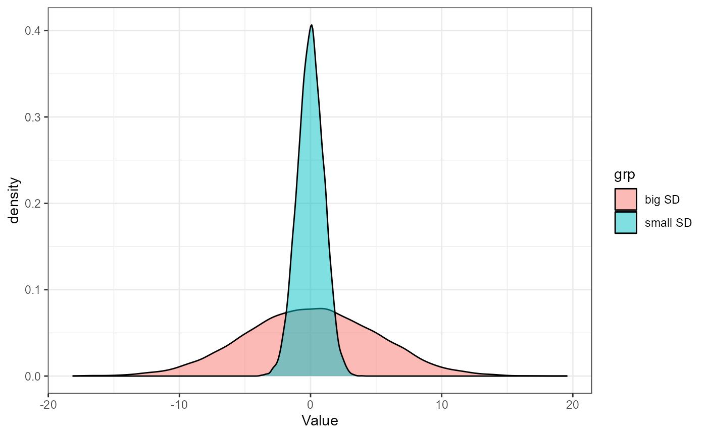

vignettes/articles/term-list.Rmd
term-list.RmdThis document contains commonly used terms, parameters, and formulas in applied statisitics. This document is non-exhaustive and is provided as an study aid.
Population: Collection of subjects of interest. Usually biologically meaningful. For example: “all the trees on the Grand Mesa”; “The dissolved oxygen levels of all streams in the Colorado River Basin”; “The total diversity of Birds (Species numbers and relative abundances) in Grand Junction throughout the year”.
Sample: A finite subset of the population, i.e., what data we collect. Samples allow us to draw inferences to the population. Good samples should be:
Random
Representative
Sufficiently large
Parameters
Attributes of the population
Usually unknown
Attributes of interest
Statistics
Attributes of the sample
Usually treated as estimates of parameters
Helpful mnemoninc: match the P’s (Population and Parameters) and S’s (Samples and Statistics)
Dependent Variables
Response variable
Usually what you are measuring
Trying to determine a cause for, or effect on
In a scatterplot, usually the variable plotted on the \(Y\)-axis
Independent Variables
Predictor Variable
Generally what you hypothesize is responsible for variation in response variable
In a scatterplot, usually the variable plotted on the \(X\)-axis
| Greek Symbol | Name | Definition |
|---|---|---|
| \(\mu\) | mu | Population “true” mean or average |
| \(\sigma\) | sigma | Population “true” standard deviation (SD). Measure of the how far observation, \(y\) is from the mean, \(\mu\) |
| \(\sigma^2\) | sigma-squared | Population “true” variance |
| \(\alpha\) | alpha | Significance level, usually 0.05 |
| \(\beta\) | beta | Parameters in linear models, OR type-II error |
| \(\epsilon\) | epsilon | Error term. The variation in expected and observed value |
| \(\gamma\) | gamma | – |
| Symbol/Term | Definition |
|---|---|
| \(y_i\) | The ith observation of \(y\) |
| \(\overline{y}\) or \(\hat{\mu}\) | Sample or global mean. Estimate of \(\mu\) |
| \(\overline{y_j}\) | The estimated average for group \(j\) |
| \(\overline{y.}\) | Global mean. the \(.\) is used to delineate from group means, if needed. |
| \(s\) or \(\hat{\sigma}\) | Sample standard deviation, estimate of \(\sigma\) |
| \(s^2\) or \(\hat{\sigma}^2\) | Sample variance, estimate of \(\sigma^2\) |
| \(SE\) | Standard error of the mean. Measure of how far, on avergae, the sample mean \(\overline{y}\) is from the true mean, \(\mu\) |
| \(N, n\) | Sample size, number of observations |
| \(df\) | Degrees of Freedom. Usually in the form of \(N - 1\) or \(N - N_{of~groups}\), etc. |
| \(P\) | P-value. Generally, the probability of observing the data IF your null hypothesis (HO) is TRUE |
Hats over parameters (i.e., \(\hat{\mu}, \hat{\sigma}\)) are used to indicate that they are sample estimates.
A random variable is a numerical description of the outcome of a statistical experiment. A random variable that may assume only a finite number of values is said to be discrete; one that may assume any value in some interval on the real number line is said to be continuous. For instance, a random variable representing the number of automobiles sold at a particular dealership on one day would be discrete, while a random variable representing the weight of a person in kilograms (or pounds) would be continuous.
The probability distribution for a random variable describes how the probabilities are distributed over the values of the random variable.
A continuous random variable may assume any value in an interval on the real number line or in a collection of intervals. Since there is an infinite number of values in any interval, it is not meaningful to talk about the probability that the random variable will take on a specific value; instead, the probability that a continuous random variable will lie within a given interval is considered.
There are many probability distributions, but we will mostly be focused on the Normal Distribution.
The normal distribution, also called a Gaussian distribution, or the “bell curve” is probably somewhat familiar to you. It is a symmetric distribution that is centered near the mean (AKA average). The mean is generally represented with the greek letter \(\mu\) (mu). \(\mu\) determines where on the number line a given normal distribution falls. How wide the bell curve is is described by its standard deviation. The standard deviation is generally represented with the greek letter \(\sigma\) (sigma).
Here is an example of two normal distributions with the same mean (\(\mu\)), but different standard deviations (\(\sigma\)):
 We describe normal distributions with the following mathematical notation:
\[\Huge X \sim \text{Normal} (\mu,~ \sigma)\]
In a Normal Distribution, the mean + and - 1 standard deviation contains about 68% of the total observations (\(\mu \pm \sigma\)). Likewise, 95% of the observations are within 2 standard deviations (\(\mu \pm 2\sigma\)) and 99.7% are within 3 standard deviations (\(\mu \pm 3\sigma\)).
The t-distribution is defined by one parameter, the degrees of freedom. At large degrees of freedom (i.e., large sample size), the t-distribution is identical to a standard normal distribution. However, at small sample sizes, there is more uncertainty in the variability (i.e., \(\sigma\)) of the distribution. Hence, the t-distribution is “fatter” at the tails.
curve(dt(x, 1), -5, 5, ylim=c(0, 0.5),
xlab="t value", ylab="Probability density",
cex.lab=1.5, lwd=1.5)
curve(dt(x, 5), -5, 5, add=TRUE, col="blue", lwd=1.5)
curve(dnorm(x, 0, 1), -5, 5, add=TRUE, lty=3, lwd=1.5)
legend(-5, 0.5, c("Standard normal distribution", "t distribution (df=5)", "t distribution (df=1)"),
lty=c(3, 1, 1), col=c("black", "blue", "black"), lwd=1.5)The t-distribution is especially useful when working with small sample sizes.
NULL Hypothesis
\(H_0\)
No difference / relationship / effect
usually has the “=” sign in the Null hypothesis
Alternative Hypothesis
\(H_A\)
There is some difference / relationship / effect
Does not have the “=” sign \(H_A: \mu \ne 0\)
\(\alpha\)
Significance level. Usually 0.05
What we compare our \(P\)-value to.
\(P\)-value
How likely your observations are IF the Null hypothesis ris true.
Does NOT tell us how much evidence there is in favor of a given alternative hypothesis
\[\Huge y = \beta_0 + \beta_1x + \epsilon\] Where \(y\) is the response variable, \(\beta_0\) is the intercept, and \(\beta_1\) is the \(x\)-coefficient, and \(\epsilon\) is the error term, or the expected variation in your observation and your expected result.
It may not be obvious now, but nearly every statistical test we will perform in this class is a variation on this simple linear model.
The Sum of squares formula is a way of measuring the average deviation of an observation in a sample from the sample mean:
\[\Huge TSS = \sum_{i=1}^n (y_i - \overline{y})^2\]
Where \(n\) is the total number of observations, \(y_i\) is the ith observation in a sample, \(y\), and \(\overline{y}\) is the sample mean.
Variations on the TSS formula will come up frequently throughout class. For example, in ANOVA, we will use a modified version of the formula which calculates the average deviation of a group-mean from the global mean (AKA sample mean):
\[\Huge TSS = n_j \sum_{j=1}^a (\overline{y_j} - \overline{y.})^2\] Where \(a\) is the number of groups, \(n_j\) and \(y_j\) are the number of observations and mean of group \(j\), respectively, and \(\overline{y.}\) is the sample mean.
Likewise, the variance (\(\sigma^2\)) is just the average of the sum of squares:
\[\Large Var = \frac{TSS}{n} = \frac{\sum_{i=1}^n (y_i - \overline{y})^2}{n}\]
The standard deviation (\(\sigma\)) is the square root of the Variance:
\[\Large \sigma = \sqrt(\sigma^2)\]
If we were to repeat an experiment over and over again, we would have variation in the estimated mean. We can estimate this variation using the Standard Error of the mean.
\[\Large SEM = \frac{s} {\sqrt(n)} \] Where \(s\) is the sample standard deviation, and \(n\) is the number of observations in our sample.
The general form of a confidence interval is:
\[\Large \overline{y} \pm x*SEM \]
Where \(\overline{y}\) is the sample mean, \(x\) is a multiplier, and \(SEM\) is the standard error of the mean, based on the sample data.
If the data are assumed to come from a normal distribution, you can
estimate a 95% and 99% CI by setting \(x =
2\) and \(x = 3\), respectively.
When working with a t-distribution, the value of \(x\) will vary according to the degrees of
freedom in your sample. You can calculate the critical t-value (also
sometimes called \(t^\star\),
pronounced “t-star”) using the qt() function. For a 95% CI,
and with a sample size of 10 (\(df = n - 1
=9\)), you can calculate \(t^\star\) as
qt(0.975, df = 9). Notice that you use 0.975
instead of 0.95. This is because you have “5%” of the area
to distribute (1 - 0.95) in the t-distribution, but you have to split it
equally into either tail. In other words, your \(t^\star\) value is calculated based on the
97.5th percentile. Likewise, for a 99% CI, you can calculate \(t^\star\) as
qt(0.995, df = 9).
| Term | Definition |
|---|---|
| Objects | A data structure in R with set class, rules, etc. Essentiially, everything we work with in R is an object |
| Scalar | An object with a single value. i.e.,
x = 10
|
| Vector | A collection of observations i.e.,
z = c(2, 4, 6, 8). Vectors have to have the same data type,
i.e., numeric, character,
logical, etc. |
| Data Frame | A list of vectors of equal length. 2-dimensional data
structure. Can be a combination of different data types, but all
observations within a vector need to be the same. Columns are usually
called variables and rows are called
observations
|
| Function | A function is a set of statements organized together to
perform a specific task. Functions have different arguments, and
generally need to take an object as input. i.e.,
mean(z, na.rm = TRUE)
|
| Comments | Comments are plain text notes in R-scripts which are
note evaluated. They are started by placing a # at the
beginning of the script line. Comments are extremely useful and should
be used often in your code. |
| Classes | All objects in R have a class. Examples include
numeric,
character,logical,factors
(categorical) data.frame, matrix, and
list. Furthermore, columns (variables) within a
data.frame can have different classes. |